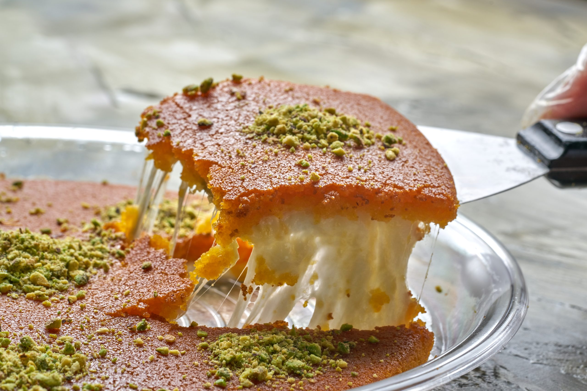

Knafeh

Soon to be your favourite dessert
A sweet cheese pastry that is one of the most popular desserts in the Middle East.
Ingredients
- 400g Whole milk ricotta
- 400g Shredded filo dough
- 2cups Melted unsalted butter
- 1cup Sugar
- 1/2cup Whole milk
- 1/2cup Water
- 2tsp Lemon juice
- 1tsp Red food colouring
- 3tbsp Semolina
- 1/4cup Minced pistachios
Steps
- Boil sugar and 1/2cup water and stir until sugar dissolves.
- Add lemon juice and food colouring, then set syrup aside.
- Boil milk and semolina in saucepan, and whisk until slightly thickened.
- Whisk in ricotta and set mixture aside.
- Toss filo and butter in bowl until butter is absorbed.
- Press half the filo into the bottom of baking dish.
- Spread ricotta mixture evenly over filo, and top with remaining dough, pressing layers firmly together.
- Bake at 180C until crisp and golden, about 70-90 minutes.
- Let cool to room temperature.
- Spoon syrup over the top and sprinkle with pistachios.